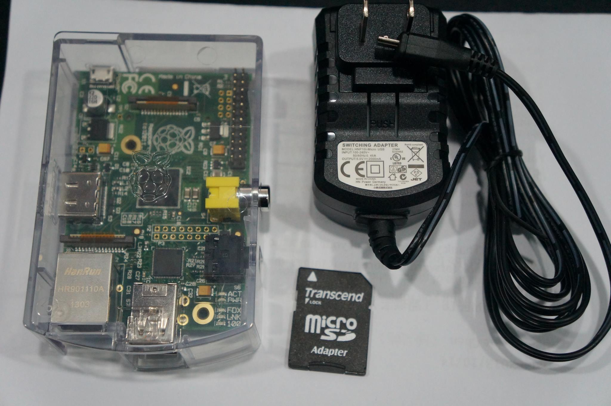

RaspBerry Pi 官網有提供各種 OS 給用戶安裝，而我選的 OS 是 Pidora， Pidora OS 是從 Fedora 演變來的，而 Fedora 又是從 Redhat 移植過來的，如果你是習慣 Redhat 系統的用戶，那麼會比較容易上手，這也是我選 Pidora 的原因。
目前 Raspberry 使用的 cpu 都是 arm arch，所以只能裝有支援 arm 的 OS ，而且不同 cpu arch 的軟體是不能互裝的，如果你已經有在 center OS ,RHEL 等等 OS 編譯過的程式，到 Pidora 還要重新編譯
先來看一張 Raspberry 的實體
安裝 Pidora
- 下載頁面 http://www.raspberrypi.org/downloads
- 選擇 OS: pidora-18-r2c.zip
下載好 Pidora 後，不要以為將資料夾 copy 到 SD Card 就能開機，必須透過軟體將 image 的內容直接寫入至 SD Card。
使用 Windows 安裝 OS
- 下載 win32diskimager-v0.9-binary
- 啟動 win32diskimager 將 pidora 寫入至 SD Card。
使用 Linux 安裝 OS
在 Linux 中可以使用 dd 這個指令，將 OS 安裝至 SD Card，可以先使用 df 或 lsusb 查詢你 SD Card 的代號(/dev/sda1)。
- dd -if pidora.image -of /dev/sda
開機預設關閉 xWindow
- sudo rm /etc/systemd/system/default.target
- sudo ln -s /lib/systemd/system/multi-user.target /etc/systemd/system/default.target
啟用 xwindow
- sudo ln -s /lib/systemd/system/graphical.target /etc/systemd/system/default.target
更新系統時間
Raspberry 只要將 SD Card 拔掉再插入，系統時間就會出錯，可以使用下列語法，跟網路上的伺服器同步時間
- sudo ntpdate pool.ntp.org
網路重新啟用
- ifconfig eth0 down && ifconfig eth0 up
安裝 Package
- sudo yum install vim
- sudo yum install screen
iptables
預設 Pidora 是有啟用 iptables ，所以部分 port 是會阻擋外部連線的，可以用下列的指令，開啟 port 。
- sudo service iptables restart
- sudo iptables -F (清除 iptables 的所有規則)
- sudo /sbin/iptables -t nat -A PREROUTING -i eth0 -p tcp --dport 80 -j DNAT --to 127.0.0.1:80
允許外部機器連到 Mysql 3306 port
- sudo /sbin/iptables -t nat -A INPUT -p tcp --dport 3306 -j ACCEPT
如果你上一步的設定有打錯，例如 IP 綁錯網卡，這時就會須要重新設定 iptables ，設定方式是先將 iptable rule 存成一個檔案，編輯後，再重新寫入。
- sudo iptables-save > iptables.rules
- vim iptables.rules
- sudo iptables-restore < iptables.rules
啟用 crontab
- sudo service crond start
Sata 與 SD Card 寫入，速度差別
- Sata 529 MB/s
- SD Card 68.4 MB/s
Format USB and mount
小型主機當然要搭配小型的 storage ，首面插上 USB， pidora 自動會讀取到 USB ，不過如果你不是使用 EXT3 格式，當你要修改檔案權限的時候，會被 OS 給中斷掉，所以我得先格式化 USB。
輸入 「sudo mkfs.ext3 /dev/sdb1 」 將 USB 格式化成 ext3 格式
最後 「sudo mount /dev/sdb1 /xxx」 將 USB 掛到 /xxx 目錄
Raspberry 安裝過程